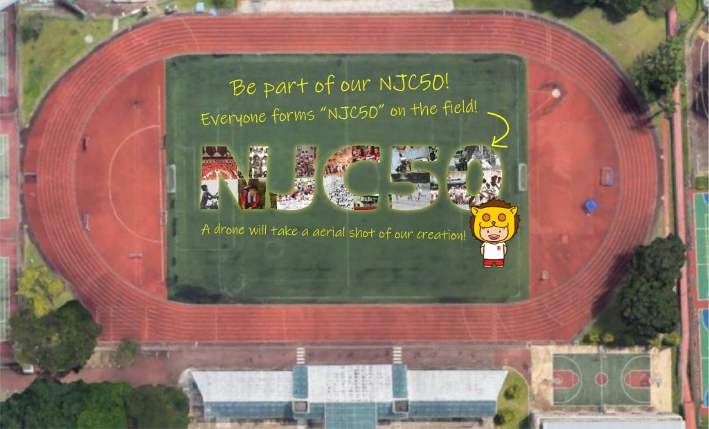
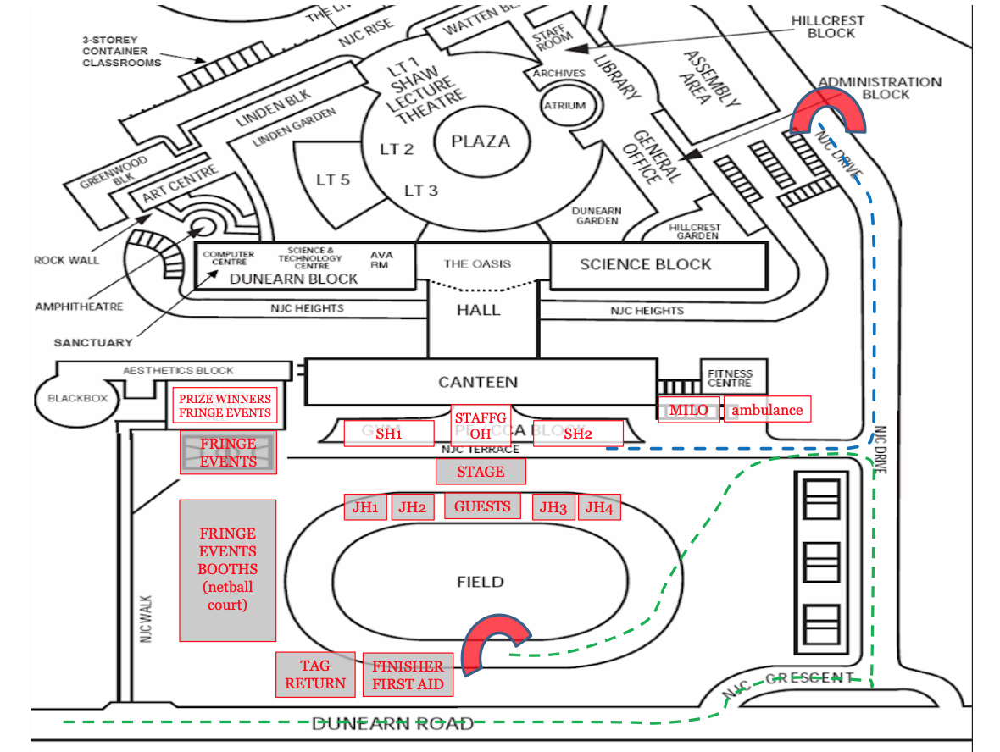
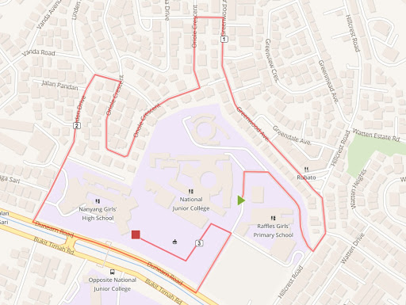
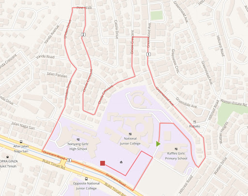
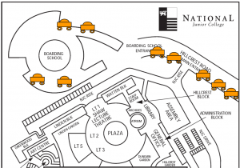

Events
-
10 Jul 2019
52nd Student Council Investiture
-
03 Jun 2019
All Secondary Schools Xiangsheng Competition
The finals of the 34th edition of the all secondary schools xiangsheng competition will be held on 3 June 2019. This long running competition is NJC’s commitment to be alive an oral cultural tradition.
-
01 Jun 2019
2 Weeks to NJ Open House! Sign up now!
Dear P6ers and parents of P6ers,
If you’re intending to come for NJ Open House on 1st June, please sign-up here!
We look forward to seeing you in two weeks! (:
-
01 Jun 2019
NJC Junior High Open House 2019
Date: 1 June 2019 (Saturday)
Time: 9am to 3pm
Venue: National Junior College
Group: College EventsHello P6 friends!
Would you like the chance to experience different CCAs in a single year? Would you like to experience school life beyond just textbooks and examinations? Would you like many opportunities to learn from others and become a better person?
NJC gives you a chance to experience all of these and more! We know you will just love the happy problem of choosing only one CCA from so many exciting ones. What about the fun you will have working and playing in all the NJC facilities over your 6 years with us? And won’t you just bask in the warmth of friendship and family feeling among the caring teachers, peers, senior students, as well as uncles and aunties that work in the school grounds and canteen?
Come and join us, to stretch your mind and form lasting friendships in an activity-packed learning environment!
Sign up for our Junior High Open House and be part of our future!
If you are interested in going on a school tour, please sign up for one of the following sessions:
School Tour Session 1 (9am to 10am)
School Tour Session 2 (9.30am to 10.30am)
School Tour Session 3 (10am to 11am)
11am – 12pm No Tours; Principal’s Talk @LT1
School Tour Session 4 (12pm to 1pm)
School Tour Session 5 (12.30pm to 1.30pm)
School Tour Session 6 (1pm to 2pm)
School Tour Session 7 (1.30pm to 2.30pm)
School Tour Session 8 (1.45pm to 2.45pm)
2 – 3pm Principal’s Talk @LT1
Our tours begin at the NJC Atrium. Each tour session will take you to different parts of the campus (including the NJC Boarding School). All tours will end with a Question & Answer session at LT1. You may visit the academic and CCA booths after your tour. Please arrive at least 15 minutes before the scheduled tour time for registration.
* We seek your understanding in that spaces for the school tours are provided on a first-come first-served basis.
To ensure that every visitor enjoy a fulfilling experience in the tour, we kindly request that there are at most 3 visitors per sign-up, in order to keep the tour group size manageable.
Please sign for the tour here. The closing date for the application for a tour is 27 May 2019 (Monday) 5pm. All tour applications will be confirmed via email.
Do visit our website www.nationaljc.moe.edu.sg regularly for updates.
What can you do at NJC on 1 June besides going on a School Tour?
You can sign up for an activity conducted by Greenlink Club!
Option 1: NJC Garden Tour
Would you like to enjoy more than 60 species of plants at one go? Do you want to know more about the biodiversity in NJC? Come join us in the NJC Garden Tour 2019! We have a central and a side garden, both with numerous beautiful exotic and native plants. Our tour guides will bring you around the gardens to introduce features and fun facts of the flora and fauna. Lucky visitors may be able to spot different species of butterflies, dragonflies or birds too!
Details
Date: 1st June 2019, Saturday (NJC Open House)
Session 1: 9:30-10am
Session 2: 10:30-11am
Can’t wait to see? Sign up now via the link here.
If you are interested but unable to make it on the event day, don’t worry! Just indicate your interest via the link above and we will inform you when we have similar events in the future.
Option 2: Vermicomposting Workshop
NJC Greenlink club students are conducting a Vermicomposting workshop during NJ Open House on 1 June (9.30-11.30am). Come and learn how to make kitchen scraps disappear and turn vegetable scraps into fertiliser!
Only 20 vacancies left! Sign up here.
-
04 May 2019
College Day
We welcome Mr Masagos Zukifli, Minister for Environment and Water Resources and our distinguished alumnus, as our Guest of Honour for our 50th Anniversary Speech Day.
-
12 Apr 2019
Malay LDDS – All Secondary Schools Translation Competition
An initiative of the Malay LDDS, this competition keeps alive our emphasis on bilingualism.
-
30 Mar 2019
NJC Alumni AGM 2019
The NJC Alumni will be having the AGM on 30 March 2019 (Saturday), 2 – 4 p.m. at the NJC Oasis.
Lunch will be served from 12:30 p.m.
-
18 Mar 2019
SISC-ISSF 2019
As part of our 50th Anniversary Celebrations, we will be hosting the 7th Singapore International Science Challenge (SISC) and the 15th International Student Science Fair (ISSF).
Our Guest of Honour for the Opening Ceremony is Professor Tan Thiam Soon, President of Singapore Institute of Technology. Professor Tan is an alumnus of NJC.
Bringing together the best minds of tomorrow, SISC-ISSF 2019 is designed to enable students to apply multiple lensing and multidisciplinary thinking to improve the human condition. Students gifted in the Sciences from across the globe come together for 5 days to communicate their research in various modes, collaborate in innovating well-designed solutions, and network with one another to establish and sustain partnerships that enable endeavour and enterprise.
The event will be held from 18th to 22nd March 2019 in Singapore. More details here.
-
23 Feb 2019
NJC50 Road Run
Mr Desmond Choo (alumnus 1995-96), Member of Parliament and Mayor of the North East District
The year 2019 marks the 50th Anniversary of Singapore’s first Junior College. To kick start the celebrations this year, we are holding a special edition of our annual Road Run!
Mr Low Wei Loong Brian (alumnus 2005-06), UFM100.3 Radio presenter and producer
We are honoured to have Mr Desmond Choo (alumnus 1995-96), Member of Parliament and Mayor of the North East District as our Guest of Honour. Also joining us is Mr Low Wei Loong Brian (alumnus 2005-06), SPH Radio UFM100.3 DJ, who will be emceeing the event.
All past staff and students who have been part of our 50 years are invited to return and celebrate together on the 23 Feb (Sat) morning at NJC.
Please register your interest here so we may be better prepared to host you!
Join our facebook event as well as like and share it with your NJC friends!
Note: The all-popular Milo Van will be making its appearance!
Programme
7:45 am Flag Raising
8:00 am GOH Opening Address8:10 am 1stRace – JH1&2
8:25 am 2ndRace – JH3&4 Girls, Staff/PAACT/Alumni
8:40 am 3rdRace – SH1&2 Girls
8:55 am 4thRace – JH3&4, SH1&2 Boys9:40 am NJC50 Formation*
10:10 am Prize Presentation12:00 pm End
*NJC50 Formation – To commemorate NJC’s 50thbirthday, we will be taking an aerial photo with all attendees gathered to form the words NJC50 on the school’s field. Come and be part of this momentous event as we continue to make history together as one college. Please wear a pre-dominantly white based t-shirt and join us on the field for this!

Fringe Activities – Fun, Food, Games!
If you are looking to attend but are not keen to run, join us for our fringe activities that will cater to all ages! Some of the highlights include:
Bouncy Castle for children under the age of 12
Carnival Game Stalls organized by the NJC student council
Food Stalls by PAACT and AlumniGoing Green
As our College is on a quest in Going Green, you are encouraged to bring your own utensils and tumblers to enjoy the food and drinks at our stalls and Milo van!
Event Layout

Running Route
3.2km – Lower JH Boys, Girls, Staff, PAACT, Alumni

3.8 km – Upper JH and SH Boys

Getting Here
National Junior College
37 Hillcrest Road
Singapore 288913
Tel: (65) 6466 1144
Fax: (65) 6468 4535
Email: njc@moe.edu.sgNearest MRT: Tan Kah Kee (Downtown Line)
Buses:
SBS: 66, 74, 151, 154, 156, 157, 170, 174
SMRT: 67, 171, 852, 961
Others: 540, 645 ** Parking will be limited. Please proceed to the Boarding School or park along the left side of Hillcrest Road. Guests are highly encouraged to take public transport or park at Greenwood estate and walk over for their warm up for the run! Cars will not be allowed into the College as the roads will be used for the run. Please look out for our friendly marshals at the main school gate who will direct you.